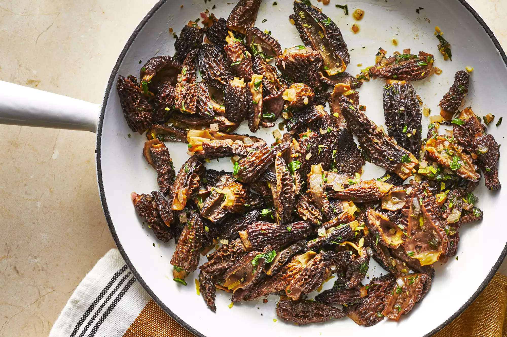

Sauteed Morel Mushrooms

Description
Rich, nutty, earthy, lightly browned mushrooms in a light layer of butter and herbs with just the slightest tinge of lemon. The lemon juice and zest cut the richness of the mushrooms and butter, and bring the flavors together for me. Serve on a steak, over pasta with a touch of added cream, on toasts with some goat cheese, as a side dish with a bit of shaved Parmesan cheese, over sauteed asparagus, or tossed with roasted potatoes and a handful of arugula.
Ingredients
- ½ pound morel mushrooms
- 2 tablespoons olive oil
- ½ teaspoon kosher salt
- ¼ teaspoon ground black pepper, or more to taste
- 2 tablespoons finely chopped shallots
- 1 teaspoon chopped fresh thyme
- 2 tablespoons unsalted butter
- 1 tablespoon chopped fresh parsley
- 1 teaspoon lemon juice
- ½ teaspoon lemon zest
Steps
- Clean and cut mushrooms in half lengthwise.
- Heat oil in a large skillet over medium-high heat until shimmering. Add mushrooms, salt, and 1/4 teaspoon pepper; stir gently with a spatula to evenly coat mushrooms with the oil. Cook, stirring often, until mushrooms begin to brown and soften, 4 to 5 minutes.
- Add shallots and thyme, then turn heat to medium. Cook, stirring often, until shallots soften and just begin to brown, about 4 minutes. Add butter, parsley, and lemon juice; stir to melt butter and blend ingredients.
- Remove from heat and sprinkle with lemon zest and additional black pepper if desired. Serve hot.